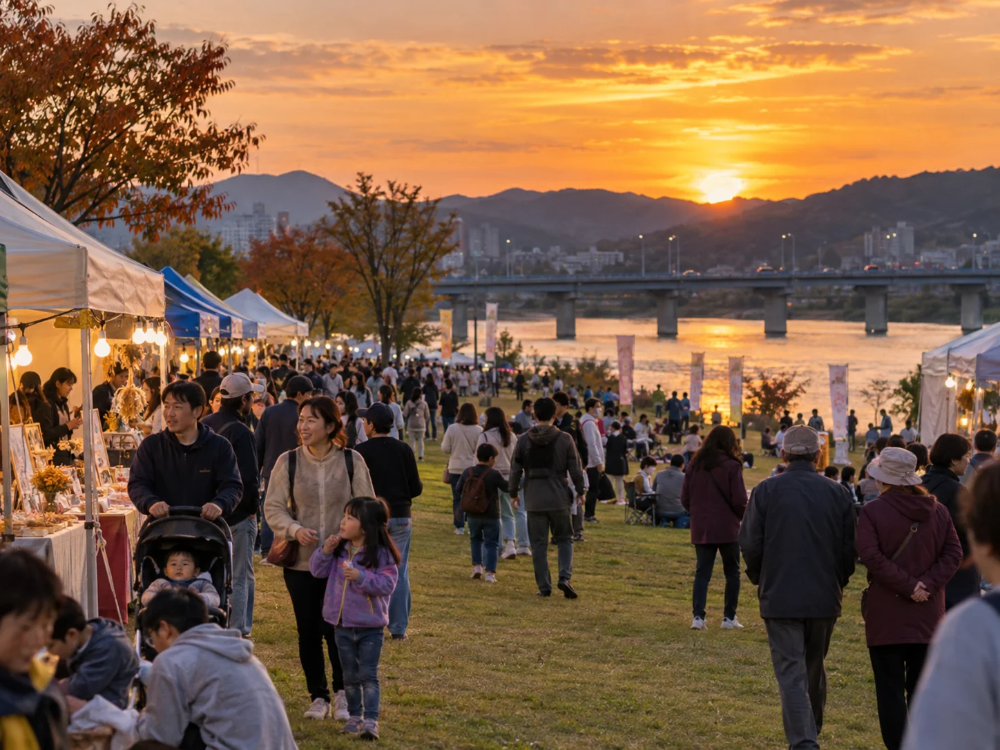
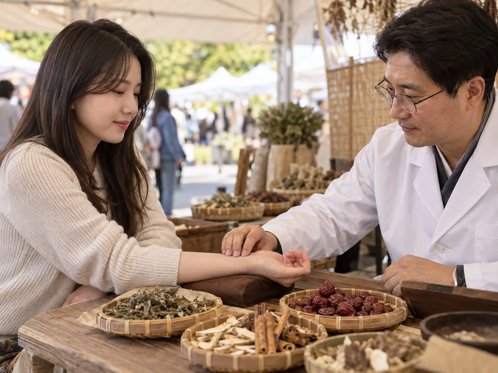
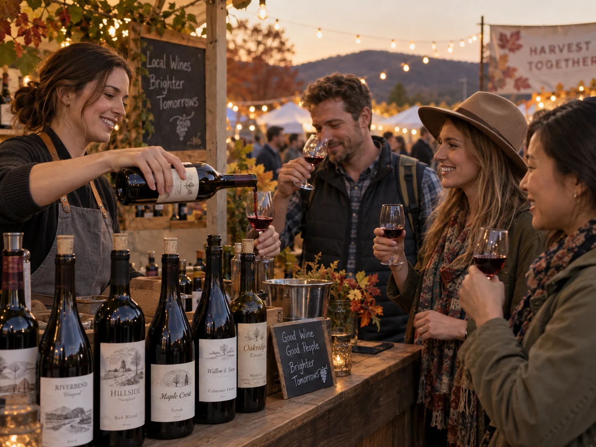
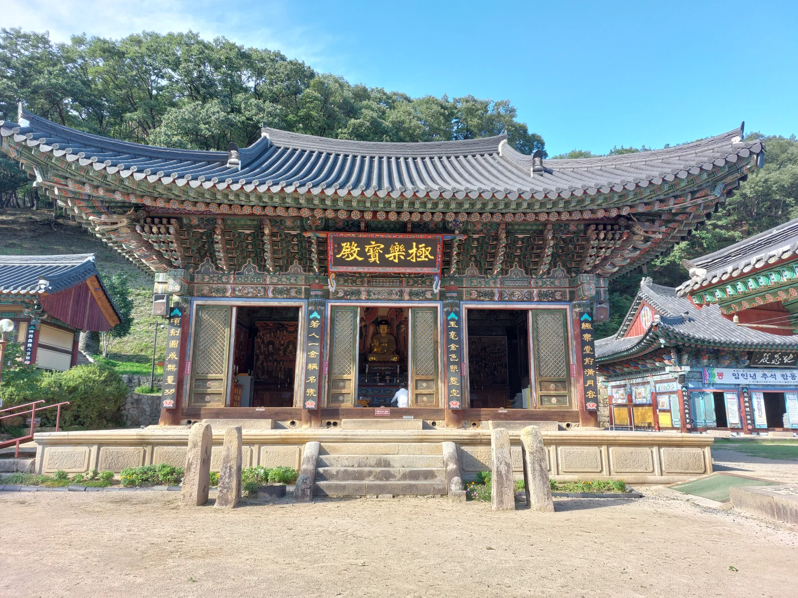
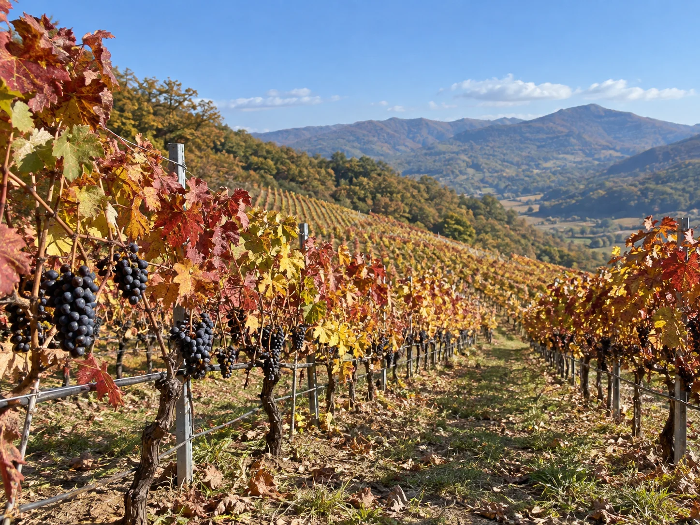

▲ 한방과 와인이라는 이색 조합은 영천이 국내에서 유일하게 내세울 수 있는 정체성이다 ⓒ CarPrism (AI 생성 이미지)
경북 영천은 두 가지 완전히 다른 정체성을 동시에 갖고 있는 도시다. 하나는 '영천에 없는 약재는 우리나라에 없다'는 말이 나올 만큼 전국 한약재 유통량의 30%를 책임지는 한방 도시, 다른 하나는 일교차 큰 분지 기후 덕에 포도 재배가 잘 되는 국내 대표 와인 산지다. 2026년 10월 2일부터 4일까지 사흘간 영천강변공원 일원에서는 이 두 정체성이 한자리에서 만나는 '2026 영천 공동축제'가 열린다. 제52회 영천문화예술제, 제24회 영천한방축제, 제14회 영천와인페스타, 별빛한우구이축제가 통합 개최되는 형태로, 한방 체험과 와인 시음을 하루 동선 안에서 모두 즐길 수 있는 흔치 않은 축제다.
1. 언제, 어디서 — 2026 영천 공동축제 기본 정보

▲ 강변을 따라 천막 부스가 늘어서는 지역 축제 현장을 형상화한 이미지. 실제 축제는 영천강변공원 일원에서 열린다 ⓒ CarPrism (AI 생성 이미지)
축제 장소는 영천강변공원 일원으로, 영동교 아래 둔치에서 영천문화원 인근까지 행사장이 확대 조성된다. 개막식은 10월 2일 오후 6시 30분 강변공원 주무대에서 열리며, 폐막일인 10월 4일 오후 6시에는 제30회 전국왕평가요제 본선이 특별 공연으로 마련된다. 네 개 축제가 한 공간에서 동시에 열리는 만큼, 방문 전 아래 표로 전체 구성을 파악해두면 동선을 짜기 수월하다.
| 행사명 | 회차 | 핵심 콘텐츠 |
|---|---|---|
| 영천문화예술제 | 제52회 | 작품 전시, 풍물·난타 경연대회, 품바페스티벌, 읍면동 민속경기, 캐릭터·페이스페인팅 체험 |
| 영천한방축제 | 제24회 | K-MEDI 건강체험존(뇌파 측정·침 치료), DHU 한방 웰니스존, 한방 약선 푸드존 |
| 영천와인페스타 | 제14회 | 지역 와이너리 와인 시음·할인 판매, 와인 만들기 체험, 병·라벨 꾸미기, 버스킹·마술공연 |
| 별빛한우구이축제 | - | 영천별빛한우 야외 구이(10~30% 할인 판매) |
2. 한방축제 — 대구한의대와 함께하는 참여형 건강 체험

▲ 한방 체험 부스의 진맥 체험을 형상화한 이미지. 실제 K-MEDI 건강체험존에서는 뇌파 측정, 침 치료, 마사지 등을 무료로 받아볼 수 있다 ⓒ CarPrism (AI 생성 이미지)
올해 24회를 맞는 영천한방축제는 '한방도시 영천'을 주제로, 단순 전시·판매를 넘어 게임과 미션을 결합한 참여형 프로그램으로 구성됐다. 대구한의대학교와 손잡고 운영하는 K-MEDI 건강체험존에서는 뇌파 측정, 침 치료, 건강 마사지를 무료로 체험할 수 있고, DHU 한방 웰니스존과 한방 약선 푸드존에서는 체질에 맞는 먹거리와 웰니스 프로그램을 함께 만나볼 수 있다. 영천한방축제는 2003년 처음 열린 이래 매년 이어져 온 행사로, 한약재 썰기·허브향낭 만들기 같은 손으로 직접 해보는 체험 프로그램도 꾸준히 인기를 끌어왔다.
3. 와인페스타 — 지역 와이너리 시음과 할인 판매

▲ 와인 시음 부스의 분위기를 형상화한 이미지. 실제 행사에서는 영천 지역 와이너리가 생산한 와인을 시음하고 할인가에 구매할 수 있다 ⓒ CarPrism (AI 생성 이미지)
제14회를 맞는 영천와인페스타는 지역 와이너리에서 생산한 다양한 와인을 직접 시음하고 저렴하게 구매할 수 있는 자리다. 단순 판매를 넘어 와인 만들기 체험, 와인병·라벨 꾸미기 같은 손으로 직접 해보는 프로그램이 함께 마련되며, 축제 기간 저녁에는 버스킹과 마술공연도 이어진다. 영천은 일교차가 크고 배수가 좋은 구릉지 토양 덕에 국내에서도 손꼽히는 포도·와인 산지로 꼽혀 왔고, 이번 통합 축제에서는 영천별빛한우구이축제와 나란히 열려 와인과 한우 페어링을 한자리에서 즐길 수 있다는 점도 특징이다.
영천와인 공식 홈페이지에서 참여 와이너리 정보 확인 가능4. 왜 하필 한방과 와인일까 — 영천이라는 도시의 배경
영천이 한방과 와인이라는 이색 조합을 축제로 내세울 수 있는 데는 각각 뚜렷한 배경이 있다. 영천은 조선시대부터 이어진 약령시(藥令市) 전통을 바탕으로 한방특구로 지정돼 있으며, 480여 종의 한약재가 이곳에서 거래되고 연간 전국 한약재 유통량의 약 30%가 영천을 거쳐 대도시로 공급된다. 2003년 시작된 영천한약축제는 이런 '한방 도시' 정체성을 알리기 위해 마련된 행사로, 올해로 24회째를 맞는다. 반면 와인은 상대적으로 최근에 자리 잡은 특산물이다. 일교차가 크고 배수가 좋은 산간 구릉지 토양이 포도 재배에 유리해 지역 와이너리들이 늘어났고, 와인페스타 역시 14회를 이어오며 영천을 대표하는 또 하나의 축제 브랜드로 성장했다. 두 축제가 문화예술제·한우축제와 함께 하나의 '공동축제'로 통합된 것은 각 행사의 방문객을 서로 끌어와 시너지를 내려는 지역 축제 운영 전략의 결과이기도 하다.
5. 주차·교통 — 대구·경산·포항에서 가는 법
영천강변공원은 동영천IC와 가까워 처음 방문하는 사람도 어렵지 않게 찾아갈 수 있다. 상주영천고속도로를 타고 동영천IC에서 빠져나오면 강변공원까지 금방 진입할 수 있고, 대구에서는 차로 약 40~50분, 포항에서는 약 50분 거리다. 축제 기간에는 영동교 둔치주차장을 이용하면 되며, 도보 약 15분이면 행사장에 닿는다. 대중교통을 이용한다면 영천역이나 영천공용버스터미널에서 시내버스나 택시로 이동하는 방법이 있다.
| 구분 | 내용 |
|---|---|
| 행사 기간 | 2026년 10월 2일(금)~4일(일), 3일간 |
| 장소 | 경북 영천강변공원 일원(영동교 아래~영천문화원 인근) |
| 주차 | 영동교 둔치주차장(행사장까지 도보 약 15분) |
| 고속도로 접근 | 상주영천고속도로 동영천IC 인근 |
| 대구에서 소요시간 | 차로 약 40~50분 |
| 포항에서 소요시간 | 차로 약 50분 |
| 개막식 | 10월 2일 오후 6시 30분, 강변공원 주무대 |
| 특별 공연 | 10월 4일 오후 6시, 제30회 전국왕평가요제 본선 |
축제 기간 강변공원 일대는 상당한 인파가 몰릴 것으로 예상되는 만큼, 주말인 10월 3~4일 오후보다는 평일 개막일인 10월 2일이나 이른 오전 시간대를 노리면 비교적 여유 있게 둘러볼 수 있다.
6. 연계 관광지 — 보현산천문대, 은해사, 영천한의마을
▲ 보현산천문대는 청명일수가 전국에서 가장 많은 곳에 자리해 국내 3대 천문관측소 중 하나로 꼽힌다(이미지는 개념 이미지) ⓒ CarPrism (AI 생성 이미지)
영천은 축제 하나만 보고 돌아가기엔 아쉬운 곳이다. 해발 1,124m 보현산 정상의 보현산천문대는 전국에서 맑은 하늘을 볼 수 있는 날(청명일수)이 가장 많은 곳에 자리해, 1996년 준공 당시 동양 최대급으로 꼽혔던 1.8m 반사망원경(현재도 국내 최대 구경)을 갖춘 국내 3대 천문관측소 중 하나로 꼽힌다. 주변에는 짚라인과 자연휴양림, 보현산 약초식물원, 보현산댐 출렁다리도 함께 조성돼 있어 반나절 코스로 묶기 좋다.

▲ 809년 창건된 천년고찰 은해사. 팔공산 자락에 자리하며 국보로 지정된 거조암 영산전도 함께 둘러볼 수 있다 ⓒ Wikimedia Commons (CC BY-SA 4.0)
팔공산 자락의 은해사는 809년(신라 헌덕왕 1년) 혜철국사가 창건한 천년고찰로, 일주문에서 보화루까지 이어지는 2㎞ 숲길 '금포정길'이 산책 코스로 사랑받는다. 은해사 산내 암자인 거조암의 영산전은 국보 제14호로 지정돼 있다. 한방 체험을 조금 더 깊이 즐기고 싶다면 영천한의마을(동의참누리원)도 들를 만하다. 오장육부를 형상화한 한옥단지 속에 한방테마거리와 전시체험공간이 조성돼 있어, 축제장의 짧은 체험 부스보다 여유 있게 한방 문화를 접할 수 있다.

▲ 일교차가 크고 배수가 좋은 구릉지 토양은 영천이 국내 대표 와인 산지로 꼽히는 배경이다(이미지는 개념 이미지) ⓒ CarPrism (AI 생성 이미지)
✅ 2026 영천 문화예술한방와인축제, 가기 전 체크리스트
· 기간: 2026년 10월 2일(금)~4일(일), 3일간
· 장소: 영천강변공원 일원(영동교 아래~영천문화원 인근)
· 구성: 제52회 영천문화예술제 + 제24회 영천한방축제 + 제14회 영천와인페스타 + 별빛한우구이축제
· 한방축제 핵심: 대구한의대 협업 K-MEDI 건강체험존(뇌파 측정·침 치료 무료 체험)
· 와인페스타 핵심: 지역 와이너리 시음·할인 판매, 와인 만들기 체험
· 개막식 10/2 18:30, 특별공연 전국왕평가요제 본선 10/4 18:00
· 주차는 영동교 둔치주차장, 동영천IC 인접, 대구에서 약 40~50분
· 연계 코스: 보현산천문대, 은해사, 영천한의마을
· 정확한 세부 프로그램·시간표는 공식 인스타그램(@yc_herb) 등에서 시즌 임박 시 재확인 필요